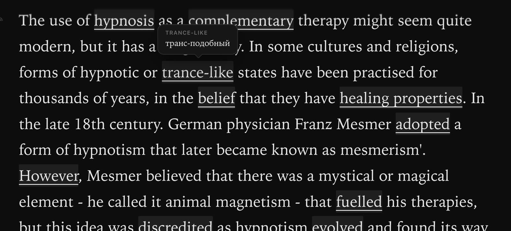
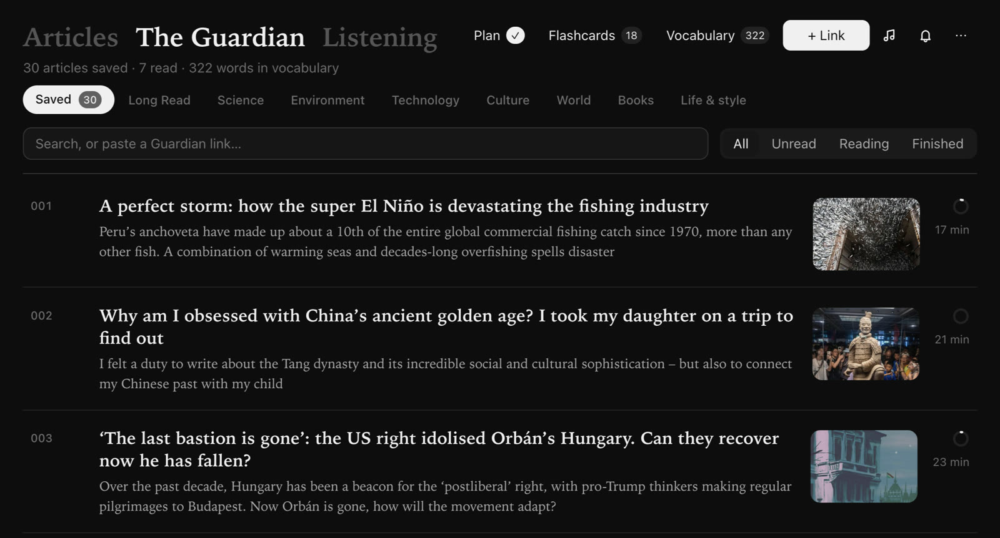
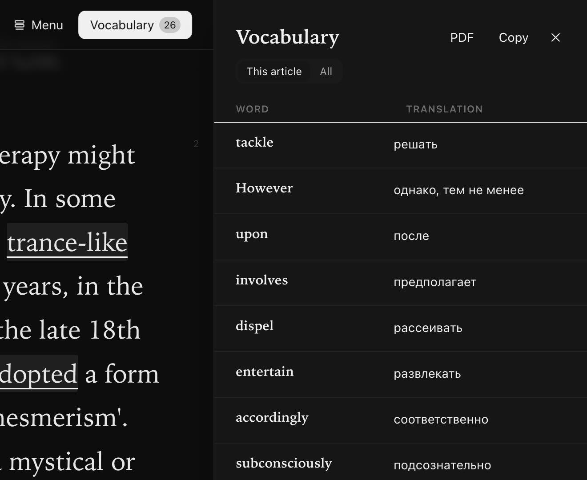
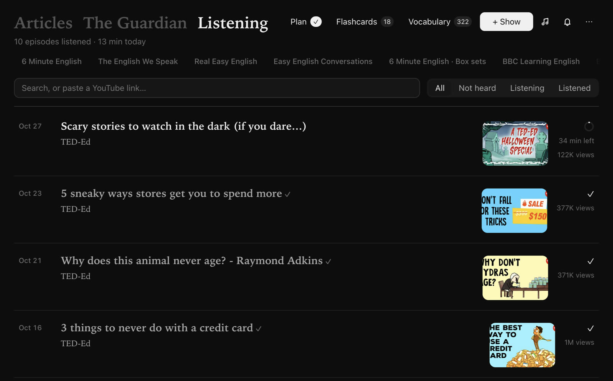
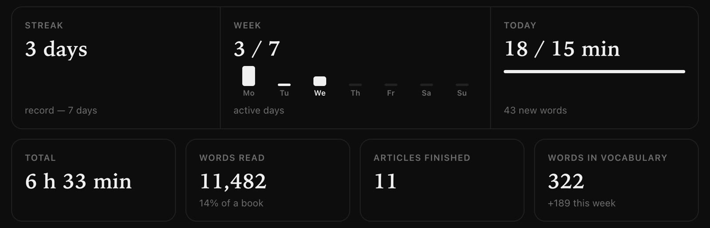
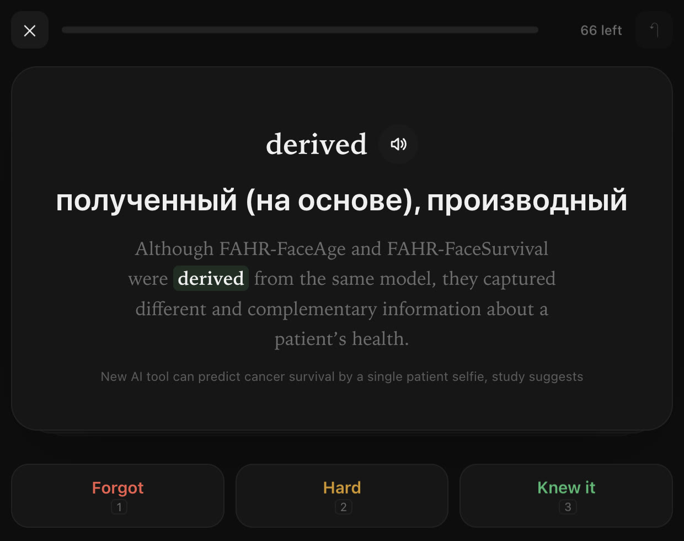
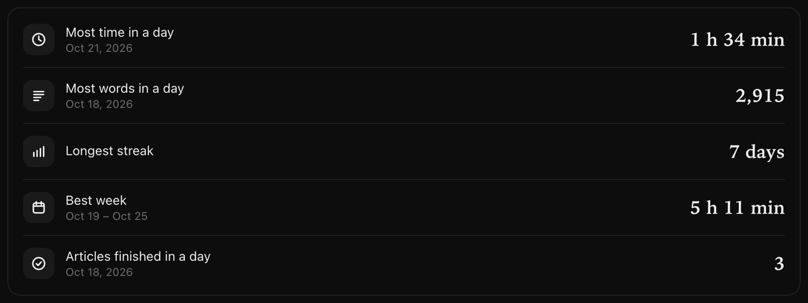
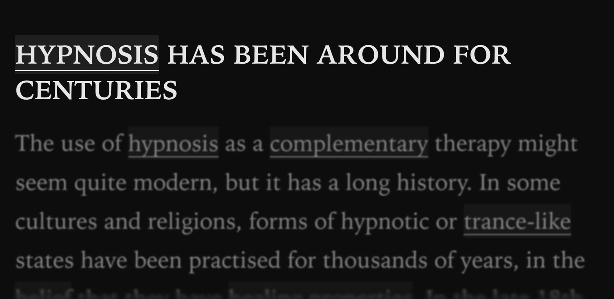
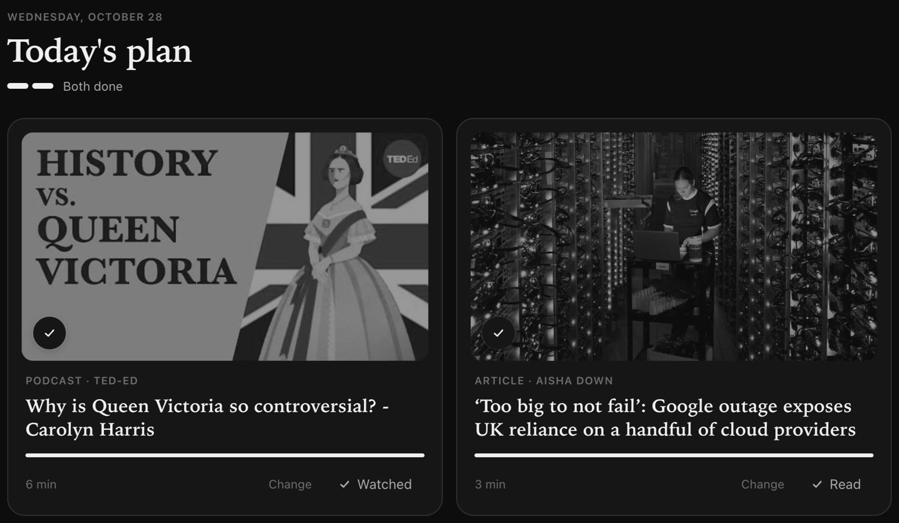
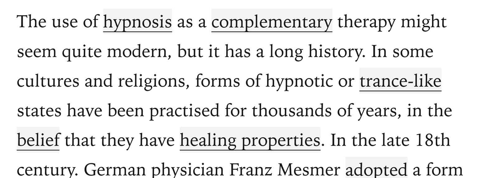

Inkwell
Maqolalar, podkastlar va o‘zingizning lug‘atingiz — bitta tinch, qora-oq oynada.

Kutubxona. Sizning PDF'laringiz, The Guardian va podkastlar — bitta qatorda.

O‘qish. Notanish so‘zni bosing — tarjimasi bilan lug‘atga tushadi.
Lug‘at. Har bir so‘z, gapi va tarjimasi bilan. PDF qilib chiqaring.

Tinglash. YouTube podkastlari, subtitrlar va tezlik — o‘qishning yonida.

Statistika. Seriya, rekordlar va jami natijalar — har kuni qaytib qaraysiz.

Bir maqolada saqlagan so‘zingiz boshqa har bir maqolada ham belgilanadi. Tarjimasi bir bosishda.
Saqlagan so‘zlaringiz kartochkalarga aylanadi va kerakli kuni takrorga qaytadi.

Har kuni ozgina — olov o‘chmaydi.
Bugungi maqsad, hafta, rekordlar va jami natijalar.

Podkastni eshitib, yonida yozib boring.
Faqat siz o‘qiyotgan abzats.

Har sahifada siz bilan yuradigan kichkina hamroh.
Har kuni bitta maqola va bitta podkast.

Har kuni yangi maqolalar, bo‘limlar bo‘yicha.
Yorug‘ va qorong‘i mavzu, tizimga moslashadi.
